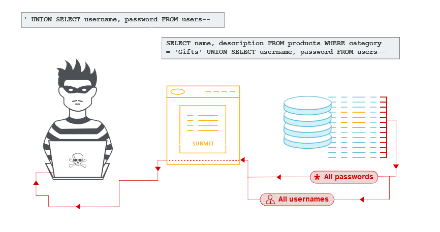
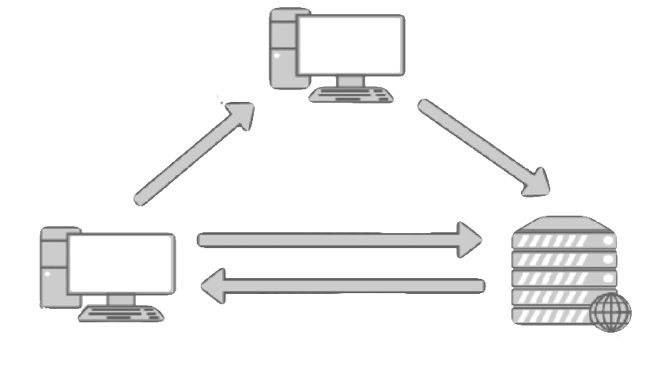

O que é Pentest?
Pentest (penetration testing), ou teste de invasão/intrusão, é um método de certificar a segurança de uma aplicação. Os ataques usados pelo profissional de segurança, são os mesmos de uma pessoa mal-intencionada, contudo o profissional obtém maior êxito por seu maior compreendimento, fazendo com que a plataforma fique mais segura, estando passos á frente do atacante. Tendo em mente esta lógica, podemos citar exemplos como;
Ataque de SQL Injection

Ataque de XSS>

Estes são apenas exemplos de ataques comúns e de fácil acesso, porém são os ataques não-cotados, as falhas desconhecidas ou os métodos menos ortodoxos que fazem o profissional de segurança realizar o pentest com sucesso, deixando assim a aplicação-alvo blindada contra invasores que possuem razo conhecimento ou seguem tutoriais achados pela internet.
Como é feito um Pentest?
Um pentest geralmente é dividido em fases, sendo elas comumente divididas em;
• 1 - Coleta de informações
• 2 - Varredura e mapeamento de rede
• 3 - Enumeração de serviços
• 4 - Obtenção de acesso e busca por vulnerabilidades
• 5 - Exploração da(s) vulnerabilidade(s)
• 6 - Evidência e reportação
Cada etapa é explorada com a ajuda de uma ferramenta, um exploit próprio desenvolvido pelo próprio profissional de segurança para uso e exploração de uma falha específica ou até mesmo ferramentas e exploits desenvolvidos pela comunidades ou por outros profissionais, caso possível. Todas estas etapas tem importância crucial no processo de obter o resultado final, que pode ser definido como atingir um nível de destruição crítico na aplicação, acessar um banco ou seção de dados privados dos clientes ou da própria empresa, conseguir dados de acesso ou documentação sigilosa, entre outros.
O processo é encerrado após o profissional atingir seu objetivo definido em contrato, e compilando toda sua pesquisa e obtenção em forma de dois relatórios;
Um destinado á equipe técnica, com informações sobre a falha, a linguagem em que o exploit foi desenvolvido, como o banco foi atingido, como reparar ou aniquilar a falha entre outras informações. E um destinado á diretoria, explicando como a falha poderia afetar a empresa e/ou seus clientes, como a documentação ou o banco exposto poderia ser usado de má fé pelo invasor ou criptografado para ser resgatado após uma recompensa exigida pelo invasor, geralmente exigida em Bitcoin.